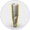
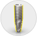
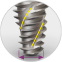
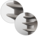
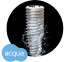
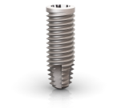
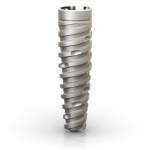

Projetado para tratamentos imediatos previsíveis para todos os
tipos de densidades ósseas
O aumento das expectativas para tratamento de menor duração
representa um desafio significativo para os profissionais de
odontologia. O sistema Neodent® Grand Morse® oferece um
exclusivo design de implante com a inovadora superfície
hidrofílica Acqua™, projetados para maximizar a estabilidade
primária e a previsibilidade nos protocolos imediatos
Helix ® - Design ideal para alcançar alta estabilidade primária
O Helix® Grand Morse® é um implante híbrido, inovador,
projetado para maximizar as opções de tratamento e a
eficiência em todos os tipos de ossos
Implante com corpo duplamente cônico
Região cervical: 2° - 12°
Região apical: 16°
Permite sub-instrumentação

Roscas com contorno híbrido
Região cervical: Cilíndrico
Região apical: Cônico
Estabilidade com flexibilidade
no posicionamento vertical

Ápice ativo
Ponta suave e arredondada
Câmaras helicoidais
Permite a carga imediata

Design de roscas progressivamente dinâmicas
Região cervical: Trapezoidal > compactação
Ápice: Triangulares > autocortantes
Idealizado para alcançar alta estabilidade
primária em todas as densidades ósseas

Superfície hidrofílica Acqua™
Projetada para alta previsibilidade
de tratamento


Titamax®
Flexibilidade no posicionamento vertical. Osso tipo I e II.

Drive®
Alta estabilidade primária em baixa densidade óssea. Osso
tipo III e IV